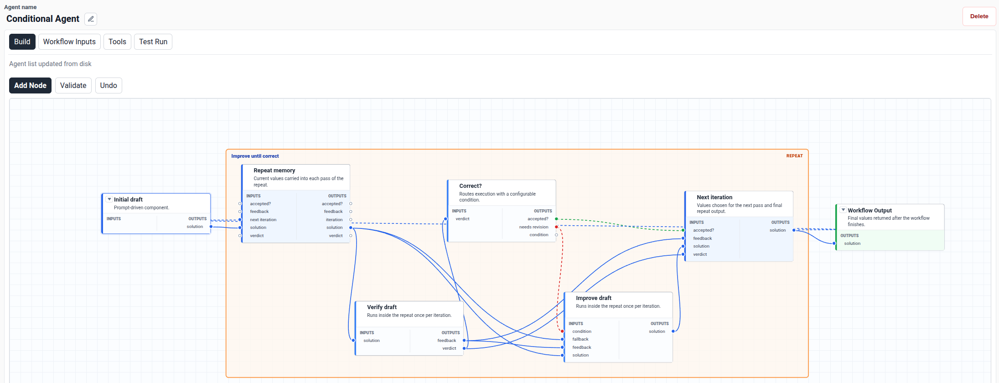
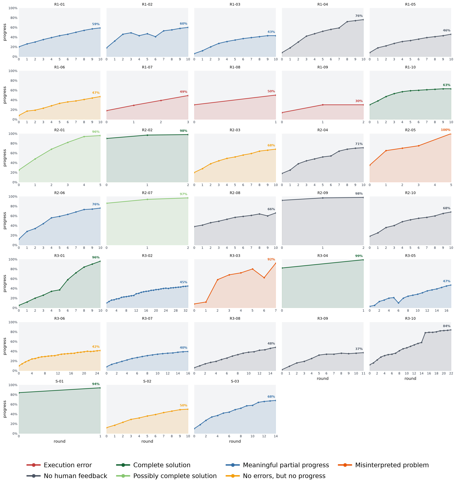

An appendix includes a Lean 4/Mathlib project, generated by Codex with GPT-5.5, formalizing the main ingredients of an Erdős-problem result found by the agent.
Abstract
Large language models (LLMs) have shown increasing promise in solving open problems in mathematics. However, their performance can be further improved through agentic workflows tailored to real-world mathematical practice. To this end, we introduce ProofCouncil, a mathematical agent that is designed to tackle open problems using an author-critic architecture. ProofCouncil served as a submission to the second batch of FirstProof, a challenge consisting of 10 real-world mathematical problems that agents must solve autonomously. Its submissions for 6 of the 10 problems were judged by the referees to be correct up to at most minor revisions, showing the best performance among participating teams. We also evaluate ProofCouncil on 30 open problems collected from mathematical researchers. Among the 21 solutions that received human feedback, 5 were judged completely correct, 2 more were judged promising pending final verification, and a further 8 contained useful partial progress. In this short paper, we describe the development of ProofCouncil and the agent-building library used to create it, which we release as open source to the community.
Problem
LLMs show promise on open mathematical problems, and agentic workflows modeled on real mathematical practice may improve them further. The FirstProof challenge tests agents on 10 research problems with no public solutions, which must be solved autonomously within 24 hours.
Approach
ProofCouncil uses an author-critic architecture. A GPT-5.5-Pro author edits LaTeX proof, notes and bibliography files, and a critic reviews each version; the critic's history is reset periodically for independent review. The author can query a council of other LLMs and a compute agent for CAS calculations. The system is built on an open-source library that represents agent workflows as conditional DAGs, and one Erdős-problem result was additionally formalized in Lean 4 with Mathlib.

Figure 6: Graph view for inspecting workflow structure and the state of individual nodes.
Results
Referees judged 6 of the 10 FirstProof submissions correct up to at most minor revisions, the best among participating teams. On 30 researcher-submitted open problems, 21 received reviews: 5 complete solutions, 2 possibly complete, and 8 with meaningful partial progress. Running costs exceeded $200 per problem.

Figure 2: Progress panel for all 33 attempted problems: rows R1–R3 show the three 10-problem runs, row S the three single-problem pretest runs. Curves show GPT-5.5-Pro postscreen progress estimates. Colors indicate final status, per human feedback where received; the feedback categories match Tab. 1 .
Category
Count
Problems evaluated
30
Researcher reviews received
21
Complete solutions
5
Possibly complete solutions
2
Meaningful partial progress
8
Summary of human feedback on the open-question evaluation